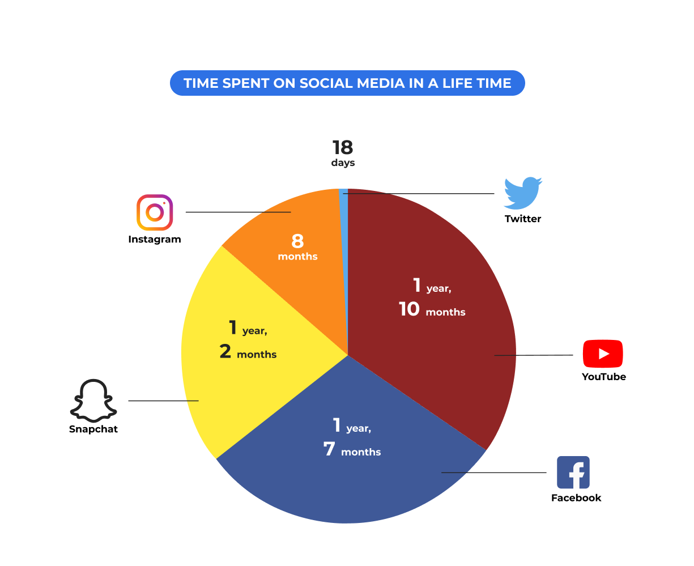
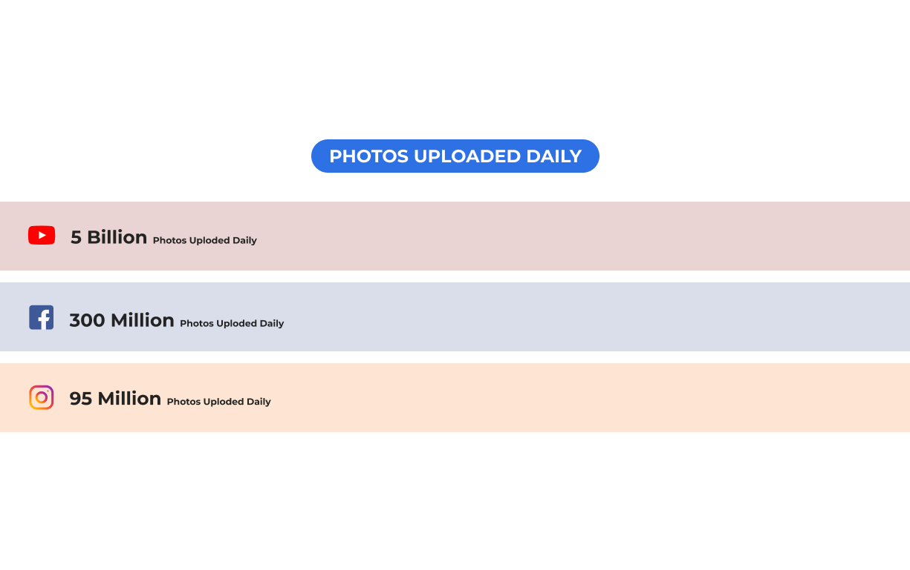
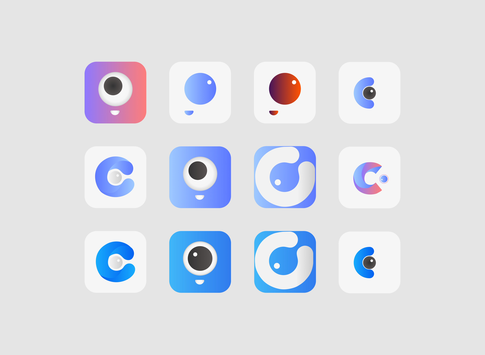

Project Candid
- Name
- Candid
- Type
- Hackathon Project
- Timeline
- 13 - 15 Sept, 2019
- Tools
- Illustrator, Figma
- My Role
- UI/UX Design, Illustration
- Team
- Jacqueline Ji, Ryan Nourbaran, Nick Crawford, Andrew Wang
What problems are we trying to solve?
Studies have linked the use of social media to depression, anxiety, poorer sleep quality, lower self-esteem, inattention, and hyperactivity — often in teens and adolescents.
Technology is being blamed for making people lonelier. We wanted to change this by focusing one specific thing that people do. Taking photos to post on social media when hanging out with friends. CANDID is an AI camera that detected the best shots and take it for users, and therefore encourages the user to put their phones down and talk people with their full attention.
Why is it important?
here an estimation of how much time an average person spent on social media in a life time accroding to statistics
 A study done by the ORIGIIN research group shown that the top 1 reason that gen z users quitting social media is that they find themselves wasting too much time on it.
We want so create an AI camera that helps the users save time by capturing the perfect shot to post on social media. So that the users can really enjoy that event with their full attention and still able to share those moments.
How does it work?
Whether you just want some candid photos with your friend group without faking it, or you're hosting an event and trying to catch those authentic fun moments to post on the event page, CANDID is for you.
Position your phone to be facing where the crowd is and press start. Come back in 20 minutes and you will see 9 best moments that the camera had captured for you.
What did I learned from this project
We started with making it an app that whenever a smile is detected using Microsoft Azure Face, it triggers the shutter button. We had a lot of fun building and testing the app as all of us would have to smile at the camera to test if it works. Unfortunately our app didn't quite work at the end due to time constraint. This is more of an experimental project we did and it teached me a lot about what makes a good team player.
Mockup at the Hackathon
The current version has been modified and improved after Hack the North. Here is the mockup I had during the Hackathon.

Logo experimentation
What's next
We decided to build a seperate app due to some technical and time constraints. But ideally we would like this to be an additional feature on social media platform.
We also want to turn this into a products that help people would disabilities take better photos.